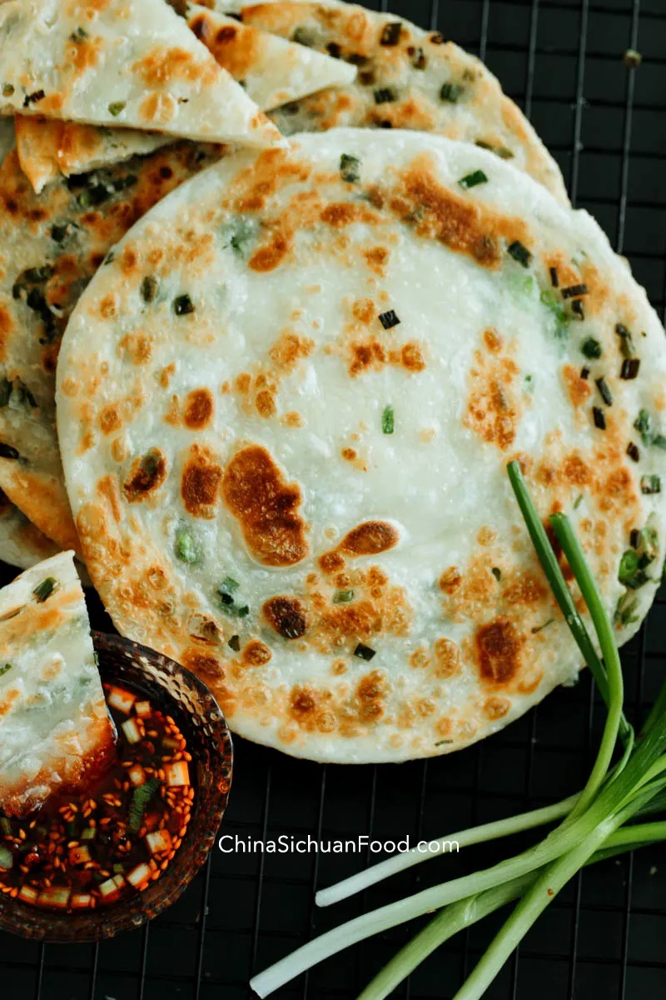

Recipe: Scallion Pancakes

Description
This dish is a classic part of a Chinese breakfast. At its best, it's at once crispy and flaky on the outside and soft and chewy on the inside. Scallions and spices make the dish sing.
Ingredients
Dough Ingredients
- 2 cup unshifted all purpose flour , around 300g
- 1/2 cup hot boiling water
- 1/4 cup room temperature water
- 1 tsp. salt
- 1 tbsp. vegetable cooking oil
Assemble and pan-frying
- 4~6 tbsp. cooking oil , 2 for brushing, other for pan-frying
- 2 cup chopped scallion , use green part only
- 1 tbsp. Chinese five spice powder , optional
Dipping sauce
- 1 tbsp. light soy sauce
- 1/2 tbsp. sesame oil
- 1/4 tsp. salt
- 1 tbsp. chili oil
- chopped green onion and coriander
Steps
Make the dough
- Mix salt with all purpose flour.
- Stir in the hot water first. Mix for a while and then stir in the room-temperature water and cooking oil too. Grasp everything to form a ball, cover, and rest for 10 minutes. You don't need to knead the dough until very smooth at this stage because it may be hard to achieve. Just cover and let the flour and water combine.
- After resting, then knead until very smooth (around 3-5 minutes ). Then divide the dough into 4 pieces. Shape each portion into a smooth round dough. Cover the rest for 20 to 30 minutes.
Assemble the pancake
- Take one small ball out, and roll it out to a rectangle around 10cm wide and 8cm high. Brush some oil in the center part and then sprinkle Chinese five spice powder if using. Spread the chopped scallion in. Fold up the rectangle into a cylinder. Repeat to finish all four cylinders.
- Take one out, slightly lengthening the cylinder with two hands, and then roll from one end to the other to form a snail shape. Suck the end into the dough.
- Repeat to finish all four. Remember to cover to avoid drying out.
- Then roll out the pancake into a large round circle. Be gentle and use your hand as most as possible. To get a perfect round pancake for beginners, get yourself a small pan (18 to 20cm in diameter) and push with your fingers to spread the dough over the pan.
Pan-frying
- Pour around 2 tablespoon of oil in a pan and then place one pancake in.
- Use middle fire to pan-fry until the surface becomes brown around 2-3 minutes. And turn over to fry for another 1 to 2 minutes. Use a spatula to twirl the circle from time and time especially the central part to ensure the circle is evenly fried. You can serve it as a whole or cut it into small pieces.
- Mix all the seasonings for the dipping sauce. Serve along with the pancakes.
Home